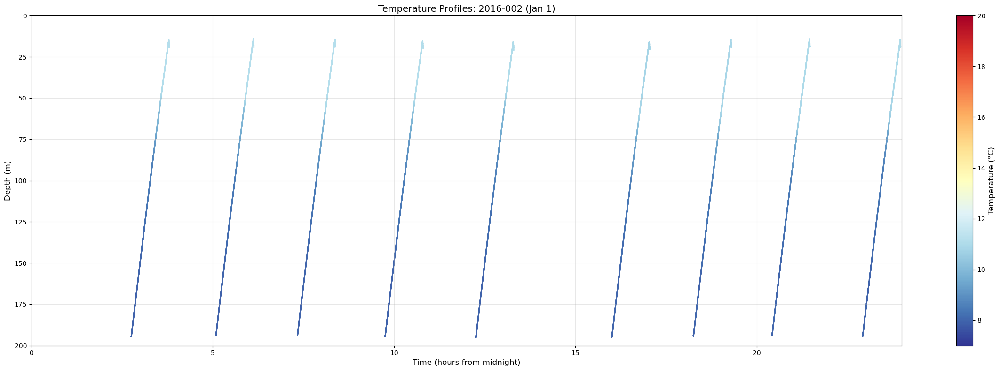

Visualizations#
Views of data primarily taken from the shard redux<yyyy> files/folders.
Bundle plot#
import matplotlib.pyplot as plt
import xarray as xr
from pathlib import Path
import ipywidgets as widgets
from IPython.display import display
import numpy as np
from datetime import datetime, timedelta
def get_input_with_default(prompt, default):
"""Get user input with default value."""
response = input(f"{prompt} ").strip()
return response if response else str(default)
# Sensor configuration
SENSORS = {
'temperature': {'low': 7.0, 'high': 20.0, 'units': '°C', 'color': 'red'},
'salinity': {'low': 32.0, 'high': 34.0, 'units': 'PSU', 'color': 'blue'},
'density': {'low': 1024.0, 'high': 1028.0, 'units': 'kg/m³', 'color': 'black'},
'dissolvedoxygen': {'low': 50.0, 'high': 300.0, 'units': 'µmol/kg', 'color': 'cyan'},
'cdom': {'low': 0.0, 'high': 2.5, 'units': 'ppb', 'color': 'brown'},
'chlora': {'low': 0.0, 'high': 1.5, 'units': 'µg/L', 'color': 'green'},
'backscatter': {'low': 0.0, 'high': 0.002, 'units': 'm⁻¹sr⁻¹', 'color': 'gray'}
}
# Get year range
start_year = int(get_input_with_default("Start year (default 2015):", "2015"))
end_year = int(get_input_with_default("End year (default 2016):", "2016"))
print(f"\nScanning redux folders from {start_year} to {end_year}...")
available_years = []
for year in range(start_year, end_year + 1):
redux_dir = Path(f"~/redux{year}").expanduser()
if redux_dir.exists():
profile_count = len(list(redux_dir.glob("*.nc")))
if profile_count > 0:
print(f" redux{year}: {profile_count} profiles")
available_years.append(year)
if not available_years:
print("No years found")
else:
print(f"\nUsing years: {available_years}")
# Select number of sensors
num_sensors = int(get_input_with_default("How many sensors to plot? (1 or 2, default 2):", "2"))
selected_sensors = []
sensor_configs = []
# Select sensors
for i in range(num_sensors):
print(f"\nSensor {i+1} - Available types:")
for idx, sensor in enumerate(SENSORS.keys(), 1):
print(f" {idx}. {sensor}")
default_choice = 1 if i == 0 else 2
sensor_choice = input(f"Select sensor {i+1} (1-7, default {default_choice}): ").strip()
sensor_idx = int(sensor_choice) if sensor_choice else default_choice
selected_sensor = list(SENSORS.keys())[sensor_idx - 1]
selected_sensors.append(selected_sensor)
sensor_configs.append({
'name': selected_sensor,
'low': SENSORS[selected_sensor]['low'],
'high': SENSORS[selected_sensor]['high'],
'units': SENSORS[selected_sensor]['units'],
'color': SENSORS[selected_sensor]['color'],
'mode': 'bundle'
})
print(f" Selected: {selected_sensor}")
# Load profile files for each sensor
all_profile_files = {}
for sensor in selected_sensors:
profile_files = []
for year in available_years:
redux_dir = Path(f"~/redux{year}").expanduser()
year_files = sorted(list(redux_dir.glob(f"*_{sensor}_*.nc")))
profile_files.extend(year_files)
all_profile_files[sensor] = profile_files
print(f"\n{sensor}: {len(profile_files)} profiles")
# Use the sensor with most profiles for indexing
max_profiles = max(len(files) for files in all_profile_files.values())
if max_profiles == 0:
print("No profiles found")
else:
def extract_profile_info(filename):
"""Extract year, day, and profile number from filename."""
parts = filename.stem.split('_')
year = int(parts[4])
doy = int(parts[5])
profile_num = int(parts[7])
return year, doy, profile_num
def check_time_gap(files, start_idx, end_idx):
"""Check if there's a >2 day gap between consecutive profiles."""
if len(files) == 0 or start_idx >= len(files):
return False
for i in range(start_idx, min(end_idx - 1, len(files) - 1)):
parts1 = files[i].stem.split('_')
parts2 = files[i + 1].stem.split('_')
year1, doy1 = int(parts1[4]), int(parts1[5])
year2, doy2 = int(parts2[4]), int(parts2[5])
date1 = datetime(year1, 1, 1) + timedelta(days=doy1 - 1)
date2 = datetime(year2, 1, 1) + timedelta(days=doy2 - 1)
if (date2 - date1).days > 2:
return True
return False
def plot_bundle(nProfiles, index0, low1, high1, mode1, low2=None, high2=None, mode2=None):
"""Plot a bundle of consecutive profiles."""
if nProfiles == 0:
plt.figure(figsize=(10, 8))
plt.text(0.5, 0.5, 'Select nProfiles > 0', ha='center', va='center', transform=plt.gca().transAxes)
plt.show()
return
start_idx = index0 - 1
end_idx = min(start_idx + nProfiles, max_profiles)
if start_idx >= max_profiles:
plt.figure(figsize=(10, 8))
plt.text(0.5, 0.5, f'Index {index0} exceeds available profiles', ha='center', va='center', transform=plt.gca().transAxes)
plt.show()
return
# Update sensor configs with slider values
sensor_configs[0]['low'] = low1
sensor_configs[0]['high'] = high1
sensor_configs[0]['mode'] = mode1
if num_sensors == 2:
sensor_configs[1]['low'] = low2
sensor_configs[1]['high'] = high2
sensor_configs[1]['mode'] = mode2
# Create figure
fig, ax1 = plt.subplots(figsize=(12, 8))
# Create second axis if needed
if num_sensors == 2:
ax2 = ax1.twiny()
axes = [ax1, ax2]
else:
axes = [ax1]
# Check for time gap
first_sensor_files = all_profile_files[selected_sensors[0]]
has_time_gap = check_time_gap(first_sensor_files, start_idx, end_idx)
# Plot each sensor
for sensor_idx, (sensor, config, ax) in enumerate(zip(selected_sensors, sensor_configs, axes)):
profile_files = all_profile_files[sensor]
if config['mode'] == 'bundle':
# Plot individual profiles
for i in range(start_idx, min(end_idx, len(profile_files))):
try:
ds = xr.open_dataset(profile_files[i])
sensor_data = ds[sensor].values
depth = ds['depth'].values
valid_mask = ~(np.isnan(sensor_data) | np.isnan(depth))
if np.any(valid_mask):
data_clean = sensor_data[valid_mask]
depth_clean = depth[valid_mask]
ax.plot(data_clean, depth_clean, '-', color=config['color'], markersize=1, alpha=0.6, linewidth=1)
except Exception:
continue
else:
# Calculate mean and std
depth_grid = np.linspace(0, 200, 200)
interpolated_data = []
for i in range(start_idx, min(end_idx, len(profile_files))):
try:
ds = xr.open_dataset(profile_files[i])
sensor_data = ds[sensor].values
depth = ds['depth'].values
valid_mask = ~(np.isnan(sensor_data) | np.isnan(depth))
if np.any(valid_mask) and len(depth[valid_mask]) > 1:
depth_clean = depth[valid_mask]
data_clean = sensor_data[valid_mask]
# Sort by depth (ascending) for interpolation
sort_idx = np.argsort(depth_clean)
depth_sorted = depth_clean[sort_idx]
data_sorted = data_clean[sort_idx]
interp_data = np.interp(depth_grid, depth_sorted, data_sorted, left=np.nan, right=np.nan)
if np.any(~np.isnan(interp_data)):
interpolated_data.append(interp_data)
except Exception:
continue
# Need at least 2 profiles to calculate std
if len(interpolated_data) >= 2:
data_array = np.array(interpolated_data)
# Count valid (non-NaN) values at each depth
valid_counts = np.sum(~np.isnan(data_array), axis=0)
# Only calculate stats where we have at least 2 valid values
if np.any(valid_counts >= 2):
# Only compute mean/std for depths with enough data
mask = valid_counts >= 2
mean = np.full(len(depth_grid), np.nan)
std = np.full(len(depth_grid), np.nan)
mean[mask] = np.nanmean(data_array[:, mask], axis=0)
std[mask] = np.nanstd(data_array[:, mask], axis=0)
# Only plot where we have valid mean
valid = ~np.isnan(mean)
if np.any(valid):
ax.plot(mean[valid], depth_grid[valid], '-', color='black', linewidth=3)
ax.plot((mean + std)[valid], depth_grid[valid], '-', color='black', linewidth=1, alpha=0.7)
ax.plot((mean - std)[valid], depth_grid[valid], '-', color='black', linewidth=1, alpha=0.7)
elif len(interpolated_data) == 1:
# Only one profile, just plot it as mean without std
data_array = np.array(interpolated_data)
mean = data_array[0]
valid = ~np.isnan(mean)
if np.any(valid):
ax.plot(mean[valid], depth_grid[valid], '-', color='black', linewidth=3)
# Set up axes
ax.set_xlabel(f'{config["name"].capitalize()} ({config["units"]})', fontsize=12, color=config['color'])
ax.set_xlim(config['low'], config['high'])
ax.tick_params(axis='x', labelcolor=config['color'])
if sensor_idx == 1:
ax.xaxis.set_label_position('top')
# Set y-axis on primary axis
ax1.set_ylabel('Depth (m)', fontsize=12)
ax1.set_ylim(200, 0)
ax1.grid(True, alpha=0.3)
# Add Time Gap warning
if has_time_gap:
ax1.text(0.95, 0.05, 'Time Gap', transform=ax1.transAxes,
fontsize=20, fontweight='bold', ha='right', va='bottom',
bbox=dict(boxstyle='round', facecolor='white', edgecolor='black', linewidth=2))
# Title
if len(first_sensor_files) > start_idx:
first_year, first_doy, first_profile = extract_profile_info(first_sensor_files[start_idx])
last_idx = min(end_idx - 1, len(first_sensor_files) - 1)
last_year, last_doy, last_profile = extract_profile_info(first_sensor_files[last_idx])
title = f'{first_year}-{first_doy:03d}-{first_profile} to {last_year}-{last_doy:03d}-{last_profile}'
fig.suptitle(title, fontsize=14)
plt.tight_layout()
plt.show()
# Create interactive widgets
nProfiles_slider = widgets.IntSlider(value=1, min=0, max=180, step=1, description='nProfiles:', continuous_update=False)
index0_slider = widgets.IntSlider(value=1, min=1, max=max_profiles, step=1, description='index0:', continuous_update=True)
# Range sliders and mode toggle for sensor 1
default_low1 = sensor_configs[0]['low']
default_high1 = sensor_configs[0]['high']
low1_slider = widgets.FloatSlider(value=default_low1, min=0, max=default_high1, step=(default_high1)/100,
description=f'{sensor_configs[0]["name"]} low:', continuous_update=False, readout_format='.3f')
high1_slider = widgets.FloatSlider(value=default_high1, min=default_high1/2, max=2*default_high1, step=(default_high1)/100,
description=f'{sensor_configs[0]["name"]} high:', continuous_update=False, readout_format='.3f')
mode1_toggle = widgets.ToggleButtons(options=['bundle', 'meanstd'], value='bundle', description=f'{sensor_configs[0]["name"]} mode:')
if num_sensors == 2:
default_low2 = sensor_configs[1]['low']
default_high2 = sensor_configs[1]['high']
low2_slider = widgets.FloatSlider(value=default_low2, min=0, max=default_high2, step=(default_high2)/100,
description=f'{sensor_configs[1]["name"]} low:', continuous_update=False, readout_format='.3f')
high2_slider = widgets.FloatSlider(value=default_high2, min=default_high2/2, max=2*default_high2, step=(default_high2)/100,
description=f'{sensor_configs[1]["name"]} high:', continuous_update=False, readout_format='.3f')
mode2_toggle = widgets.ToggleButtons(options=['bundle', 'meanstd'], value='bundle', description=f'{sensor_configs[1]["name"]} mode:')
# Navigation buttons
def on_minus_minus(b):
step = max(1, nProfiles_slider.value // 2)
index0_slider.value = max(1, index0_slider.value - step)
def on_minus(b):
index0_slider.value = max(1, index0_slider.value - 1)
def on_plus(b):
index0_slider.value = min(max_profiles, index0_slider.value + 1)
def on_plus_plus(b):
step = max(1, nProfiles_slider.value // 2)
index0_slider.value = min(max_profiles, index0_slider.value + step)
btn_minus_minus = widgets.Button(description='--')
btn_minus = widgets.Button(description='-')
btn_plus = widgets.Button(description='+')
btn_plus_plus = widgets.Button(description='++')
btn_minus_minus.on_click(on_minus_minus)
btn_minus.on_click(on_minus)
btn_plus.on_click(on_plus)
btn_plus_plus.on_click(on_plus_plus)
nav_buttons = widgets.HBox([btn_minus_minus, btn_minus, btn_plus, btn_plus_plus])
# Create interactive plot
if num_sensors == 1:
interactive_plot = widgets.interactive(plot_bundle, nProfiles=nProfiles_slider, index0=index0_slider,
low1=low1_slider, high1=high1_slider, mode1=mode1_toggle)
else:
interactive_plot = widgets.interactive(plot_bundle, nProfiles=nProfiles_slider, index0=index0_slider,
low1=low1_slider, high1=high1_slider, mode1=mode1_toggle,
low2=low2_slider, high2=high2_slider, mode2=mode2_toggle)
# Display widgets
display(interactive_plot)
display(nav_buttons)
---------------------------------------------------------------------------
StdinNotImplementedError Traceback (most recent call last)
Cell In[1], line 26
15 SENSORS = {
16 'temperature': {'low': 7.0, 'high': 20.0, 'units': '°C', 'color': 'red'},
17 'salinity': {'low': 32.0, 'high': 34.0, 'units': 'PSU', 'color': 'blue'},
(...)
22 'backscatter': {'low': 0.0, 'high': 0.002, 'units': 'm⁻¹sr⁻¹', 'color': 'gray'}
23 }
25 # Get year range
---> 26 start_year = int(get_input_with_default("Start year (default 2015):", "2015"))
27 end_year = int(get_input_with_default("End year (default 2016):", "2016"))
29 print(f"\nScanning redux folders from {start_year} to {end_year}...")
Cell In[1], line 11, in get_input_with_default(prompt, default)
9 def get_input_with_default(prompt, default):
10 """Get user input with default value."""
---> 11 response = input(f"{prompt} ").strip()
12 return response if response else str(default)
File ~/miniconda3/envs/argo-env2/lib/python3.11/site-packages/ipykernel/kernelbase.py:1201, in Kernel.raw_input(self, prompt)
1199 if not self._allow_stdin:
1200 msg = "raw_input was called, but this frontend does not support input requests."
-> 1201 raise StdinNotImplementedError(msg)
1202 return self._input_request(
1203 str(prompt),
1204 self._parent_ident["shell"],
1205 self.get_parent("shell"),
1206 password=False,
1207 )
StdinNotImplementedError: raw_input was called, but this frontend does not support input requests.
Next attempt at bundle plot code#
Adds NOON/MIDNIGHT and CSV annotation.
import matplotlib.pyplot as plt
import xarray as xr
from pathlib import Path
import ipywidgets as widgets
from IPython.display import display
import numpy as np
from datetime import datetime, timedelta
import pandas as pd
import pytz
def get_input_with_default(prompt, default):
"""Get user input with default value."""
response = input(f"{prompt} ").strip()
return response if response else str(default)
# Oregon Slope Base timezone info
OREGON_TZ = pytz.timezone('America/Los_Angeles') # Handles PST/PDT automatically
# Sensor configuration
SENSORS = {
'temperature': {'low': 7.0, 'high': 20.0, 'units': '°C', 'color': 'red'},
'salinity': {'low': 32.0, 'high': 34.0, 'units': 'PSU', 'color': 'blue'},
'density': {'low': 1024.0, 'high': 1028.0, 'units': 'kg/m³', 'color': 'black'},
'dissolvedoxygen': {'low': 50.0, 'high': 300.0, 'units': 'µmol/kg', 'color': 'cyan'},
'cdom': {'low': 0.0, 'high': 2.5, 'units': 'ppb', 'color': 'brown'},
'chlora': {'low': 0.0, 'high': 1.5, 'units': 'µg/L', 'color': 'green'},
'backscatter': {'low': 0.0, 'high': 0.002, 'units': 'm⁻¹sr⁻¹', 'color': 'gray'}
}
# Get year range
start_year = int(get_input_with_default("Start year (default 2015):", "2015"))
end_year = int(get_input_with_default("End year (default 2016):", "2016"))
print(f"\nScanning redux folders from {start_year} to {end_year}...")
available_years = []
for year in range(start_year, end_year + 1):
redux_dir = Path(f"~/redux{year}").expanduser()
if redux_dir.exists():
profile_count = len(list(redux_dir.glob("*.nc")))
if profile_count > 0:
print(f" redux{year}: {profile_count} profiles")
available_years.append(year)
if not available_years:
print("No years found")
else:
print(f"\nUsing years: {available_years}")
# Select number of sensors
num_sensors = int(get_input_with_default("How many sensors to plot? (1 or 2, default 2):", "2"))
selected_sensors = []
sensor_configs = []
# Select sensors
for i in range(num_sensors):
print(f"\nSensor {i+1} - Available types:")
for idx, sensor in enumerate(SENSORS.keys(), 1):
print(f" {idx}. {sensor}")
default_choice = 1 if i == 0 else 2
sensor_choice = input(f"Select sensor {i+1} (1-7, default {default_choice}): ").strip()
sensor_idx = int(sensor_choice) if sensor_choice else default_choice
selected_sensor = list(SENSORS.keys())[sensor_idx - 1]
selected_sensors.append(selected_sensor)
sensor_configs.append({
'name': selected_sensor,
'low': SENSORS[selected_sensor]['low'],
'high': SENSORS[selected_sensor]['high'],
'units': SENSORS[selected_sensor]['units'],
'color': SENSORS[selected_sensor]['color'],
'mode': 'bundle'
})
print(f" Selected: {selected_sensor}")
# Load profile files for each sensor
all_profile_files = {}
for sensor in selected_sensors:
profile_files = []
for year in available_years:
redux_dir = Path(f"~/redux{year}").expanduser()
year_files = sorted(list(redux_dir.glob(f"*_{sensor}_*.nc")))
profile_files.extend(year_files)
all_profile_files[sensor] = profile_files
print(f"\n{sensor}: {len(profile_files)} profiles")
# Use the sensor with most profiles for indexing
max_profiles = max(len(files) for files in all_profile_files.values())
# Annotation data
annotation_df = None
annotation_enabled = False
if max_profiles == 0:
print("No profiles found")
else:
def extract_profile_info(filename):
"""Extract year, day, and profile number from filename."""
parts = filename.stem.split('_')
year = int(parts[4])
doy = int(parts[5])
profile_idx = int(parts[6])
profile_num = int(parts[7])
return year, doy, profile_idx, profile_num
def check_time_gap(files, start_idx, end_idx):
"""Check if there's a >2 day gap between consecutive profiles."""
if len(files) == 0 or start_idx >= len(files):
return False
for i in range(start_idx, min(end_idx - 1, len(files) - 1)):
parts1 = files[i].stem.split('_')
parts2 = files[i + 1].stem.split('_')
year1, doy1 = int(parts1[4]), int(parts1[5])
year2, doy2 = int(parts2[4]), int(parts2[5])
date1 = datetime(year1, 1, 1) + timedelta(days=doy1 - 1)
date2 = datetime(year2, 1, 1) + timedelta(days=doy2 - 1)
if (date2 - date1).days > 2:
return True
return False
def check_noon_midnight(ds):
"""Check if profile spans local noon or midnight. Returns ('NOON'/'MIDNIGHT', peak_time_local) or (None, None)."""
try:
start_time = pd.to_datetime(ds.time.values[0])
end_time = pd.to_datetime(ds.time.values[-1])
peak_time = pd.to_datetime(ds.time.values[len(ds.time.values)//2]) # Approximate peak
# Convert to Oregon local time
start_local = start_time.tz_localize('UTC').astimezone(OREGON_TZ)
end_local = end_time.tz_localize('UTC').astimezone(OREGON_TZ)
peak_local = peak_time.tz_localize('UTC').astimezone(OREGON_TZ)
# Create time window: [start - 30 min, end + 30 min]
window_start = start_local - timedelta(minutes=30)
window_end = end_local + timedelta(minutes=30)
# Create local midnight and noon times for comparison
local_midnight = start_local.replace(hour=0, minute=0, second=0, microsecond=0)
local_noon = start_local.replace(hour=12, minute=0, second=0, microsecond=0)
# Check if midnight falls in window
if window_start <= local_midnight <= window_end:
return 'MIDNIGHT', peak_local
# Check if noon falls in window
if window_start <= local_noon <= window_end:
return 'NOON', peak_local
except Exception as e:
print(f"Error in check_noon_midnight: {e}")
return None, None
def plot_bundle(nProfiles, index0, low1, high1, mode1, low2=None, high2=None, mode2=None):
"""Plot a bundle of consecutive profiles."""
if nProfiles == 0:
plt.figure(figsize=(10, 8))
plt.text(0.5, 0.5, 'Select nProfiles > 0', ha='center', va='center', transform=plt.gca().transAxes)
plt.show()
return
start_idx = index0 - 1
end_idx = min(start_idx + nProfiles, max_profiles)
if start_idx >= max_profiles:
plt.figure(figsize=(10, 8))
plt.text(0.5, 0.5, f'Index {index0} exceeds available profiles', ha='center', va='center', transform=plt.gca().transAxes)
plt.show()
return
# Update sensor configs with slider values
sensor_configs[0]['low'] = low1
sensor_configs[0]['high'] = high1
sensor_configs[0]['mode'] = mode1
if num_sensors == 2:
sensor_configs[1]['low'] = low2
sensor_configs[1]['high'] = high2
sensor_configs[1]['mode'] = mode2
# Create figure
fig, ax1 = plt.subplots(figsize=(12, 8))
# Create second axis if needed
if num_sensors == 2:
ax2 = ax1.twiny()
axes = [ax1, ax2]
else:
axes = [ax1]
# Check for time gap
first_sensor_files = all_profile_files[selected_sensors[0]]
has_time_gap = check_time_gap(first_sensor_files, start_idx, end_idx)
# Check for noon/midnight if single profile
noon_midnight_label = None
peak_time_local = None
current_profile_idx = None
if nProfiles == 1 and start_idx < len(first_sensor_files):
try:
ds = xr.open_dataset(first_sensor_files[start_idx])
noon_midnight_label, peak_time_local = check_noon_midnight(ds)
_, _, current_profile_idx, _ = extract_profile_info(first_sensor_files[start_idx])
except Exception:
pass
# Plot each sensor
for sensor_idx, (sensor, config, ax) in enumerate(zip(selected_sensors, sensor_configs, axes)):
profile_files = all_profile_files[sensor]
if config['mode'] == 'bundle':
# Plot individual profiles
for i in range(start_idx, min(end_idx, len(profile_files))):
try:
ds = xr.open_dataset(profile_files[i])
sensor_data = ds[sensor].values
depth = ds['depth'].values
valid_mask = ~(np.isnan(sensor_data) | np.isnan(depth))
if np.any(valid_mask):
data_clean = sensor_data[valid_mask]
depth_clean = depth[valid_mask]
ax.plot(data_clean, depth_clean, '-', color=config['color'], markersize=1, alpha=0.6, linewidth=1)
except Exception:
continue
else:
# Calculate mean and std
depth_grid = np.linspace(0, 200, 200)
interpolated_data = []
for i in range(start_idx, min(end_idx, len(profile_files))):
try:
ds = xr.open_dataset(profile_files[i])
sensor_data = ds[sensor].values
depth = ds['depth'].values
valid_mask = ~(np.isnan(sensor_data) | np.isnan(depth))
if np.any(valid_mask) and len(depth[valid_mask]) > 1:
depth_clean = depth[valid_mask]
data_clean = sensor_data[valid_mask]
# Sort by depth (ascending) for interpolation
sort_idx = np.argsort(depth_clean)
depth_sorted = depth_clean[sort_idx]
data_sorted = data_clean[sort_idx]
interp_data = np.interp(depth_grid, depth_sorted, data_sorted, left=np.nan, right=np.nan)
if np.any(~np.isnan(interp_data)):
interpolated_data.append(interp_data)
except Exception:
continue
# Need at least 2 profiles to calculate std
if len(interpolated_data) >= 2:
data_array = np.array(interpolated_data)
# Count valid (non-NaN) values at each depth
valid_counts = np.sum(~np.isnan(data_array), axis=0)
# Only calculate stats where we have at least 2 valid values
if np.any(valid_counts >= 2):
# Only compute mean/std for depths with enough data
mask = valid_counts >= 2
mean = np.full(len(depth_grid), np.nan)
std = np.full(len(depth_grid), np.nan)
mean[mask] = np.nanmean(data_array[:, mask], axis=0)
std[mask] = np.nanstd(data_array[:, mask], axis=0)
# Only plot where we have valid mean
valid = ~np.isnan(mean)
if np.any(valid):
ax.plot(mean[valid], depth_grid[valid], '-', color='black', linewidth=3)
ax.plot((mean + std)[valid], depth_grid[valid], '-', color='black', linewidth=1, alpha=0.7)
ax.plot((mean - std)[valid], depth_grid[valid], '-', color='black', linewidth=1, alpha=0.7)
elif len(interpolated_data) == 1:
# Only one profile, just plot it as mean without std
data_array = np.array(interpolated_data)
mean = data_array[0]
valid = ~np.isnan(mean)
if np.any(valid):
ax.plot(mean[valid], depth_grid[valid], '-', color='black', linewidth=3)
# Plot annotations if enabled and nProfiles == 1
if annotation_enabled and annotation_df is not None and nProfiles == 1 and current_profile_idx is not None:
# Filter annotations for this sensor and profile
sensor_annotations = annotation_df[
(annotation_df['shard'] == sensor) &
(annotation_df['profile'] == current_profile_idx)
]
for _, row in sensor_annotations.iterrows():
try:
# Get annotation parameters
depth_val = row.get('depth', 180)
if pd.isna(depth_val):
depth_val = 180
value_val = row.get('value', np.nan)
text_val = row.get('text', '')
if pd.notna(text_val) and text_val:
# Render text annotation
if pd.notna(value_val):
ax.text(value_val, depth_val, text_val, fontsize=10, ha='center')
else:
print(f"Cannot render text annotation: missing value for profile {current_profile_idx}")
else:
# Render marker
if pd.isna(value_val):
print(f"Cannot render marker: missing value for profile {current_profile_idx}")
continue
color_val = row.get('color', config['color'])
if pd.isna(color_val):
color_val = config['color']
markersize_val = row.get('markersize', 9)
if pd.isna(markersize_val):
markersize_val = 9
opacity_val = row.get('opacity', 1.0)
if pd.isna(opacity_val):
opacity_val = 1.0
ax.plot(value_val, depth_val, 'o', color=color_val,
markersize=markersize_val, alpha=opacity_val)
except Exception as e:
print(f"Error rendering annotation: {e}")
# Set up axes
ax.set_xlabel(f'{config["name"].capitalize()} ({config["units"]})', fontsize=12, color=config['color'])
ax.set_xlim(config['low'], config['high'])
ax.tick_params(axis='x', labelcolor=config['color'])
if sensor_idx == 1:
ax.xaxis.set_label_position('top')
# Set y-axis on primary axis
ax1.set_ylabel('Depth (m)', fontsize=12)
ax1.set_ylim(200, 0)
ax1.grid(True, alpha=0.3)
# Add Time Gap warning
if has_time_gap:
ax1.text(0.95, 0.05, 'Time Gap', transform=ax1.transAxes,
fontsize=20, fontweight='bold', ha='right', va='bottom',
bbox=dict(boxstyle='round', facecolor='white', edgecolor='black', linewidth=2))
# Add NOON/MIDNIGHT label
if noon_midnight_label:
label_text = f"{noon_midnight_label}\n{peak_time_local.strftime('%H:%M:%S')}"
ax1.text(0.95, 0.15, label_text, transform=ax1.transAxes,
fontsize=20, fontweight='bold', ha='right', va='bottom')
# Title
if len(first_sensor_files) > start_idx:
year, doy, profile_idx, profile_num = extract_profile_info(first_sensor_files[start_idx])
if nProfiles == 1:
title = f'{year}-{doy:03d}-{profile_num}'
else:
last_idx = min(end_idx - 1, len(first_sensor_files) - 1)
last_year, last_doy, _, last_profile_num = extract_profile_info(first_sensor_files[last_idx])
title = f'{year}-{doy:03d}-{profile_num} to {last_year}-{last_doy:03d}-{last_profile_num}'
fig.suptitle(title, fontsize=14)
plt.tight_layout()
plt.show()
def load_annotations(b):
"""Load annotation file."""
global annotation_df, annotation_enabled
annotation_file = annotation_path.value.strip()
if not annotation_file:
print("No annotation file specified")
return
try:
file_path = Path(annotation_file).expanduser()
if not file_path.exists():
print(f"File not found: {file_path}")
return
df = pd.read_csv(file_path)
# Check required columns
required_cols = ['shard', 'profile', 'depth', 'value', 'color', 'markersize', 'opacity', 'text']
missing_cols = [col for col in required_cols if col not in df.columns]
if missing_cols:
print(f"Missing required columns: {missing_cols}")
return
# Check for empty shard or profile
if df['shard'].isna().any() or df['profile'].isna().any():
print("Error: shard and profile fields cannot be empty")
return
annotation_df = df
annotation_enabled = not annotation_enabled
if annotation_enabled:
print(f"Annotations loaded and enabled: {len(df)} rows")
annotation_btn.description = "Annotation: ON"
else:
print("Annotations disabled")
annotation_btn.description = "Annotation: OFF"
# Trigger plot update
plot_bundle(nProfiles_slider.value, index0_slider.value,
low1_slider.value, high1_slider.value, mode1_toggle.value,
low2_slider.value if num_sensors == 2 else None,
high2_slider.value if num_sensors == 2 else None,
mode2_toggle.value if num_sensors == 2 else None)
except Exception as e:
print(f"Error loading annotations: {e}")
# Create interactive widgets
nProfiles_slider = widgets.IntSlider(value=1, min=0, max=180, step=1, description='nProfiles:', continuous_update=True)
index0_slider = widgets.IntSlider(value=1, min=1, max=max_profiles, step=1, description='index0:', continuous_update=True)
# Range sliders and mode toggle for sensor 1
default_low1 = sensor_configs[0]['low']
default_high1 = sensor_configs[0]['high']
low1_slider = widgets.FloatSlider(value=default_low1, min=0, max=default_high1, step=(default_high1)/100,
description=f'{sensor_configs[0]["name"]} low:', continuous_update=False, readout_format='.3f')
high1_slider = widgets.FloatSlider(value=default_high1, min=default_high1/2, max=2*default_high1, step=(default_high1)/100,
description=f'{sensor_configs[0]["name"]} high:', continuous_update=False, readout_format='.3f')
mode1_toggle = widgets.ToggleButtons(options=['bundle', 'meanstd'], value='bundle', description=f'{sensor_configs[0]["name"]} mode:')
if num_sensors == 2:
default_low2 = sensor_configs[1]['low']
default_high2 = sensor_configs[1]['high']
low2_slider = widgets.FloatSlider(value=default_low2, min=0, max=default_high2, step=(default_high2)/100,
description=f'{sensor_configs[1]["name"]} low:', continuous_update=False, readout_format='.3f')
high2_slider = widgets.FloatSlider(value=default_high2, min=default_high2/2, max=2*default_high2, step=(default_high2)/100,
description=f'{sensor_configs[1]["name"]} high:', continuous_update=False, readout_format='.3f')
mode2_toggle = widgets.ToggleButtons(options=['bundle', 'meanstd'], value='bundle', description=f'{sensor_configs[1]["name"]} mode:')
# Annotation widgets
annotation_path = widgets.Text(value='', placeholder='~/argosy/annotation.csv', description='Annotation file:', style={'description_width': 'initial'})
annotation_btn = widgets.Button(description='Annotation: OFF')
annotation_btn.on_click(load_annotations)
# Navigation buttons
def on_minus_minus(b):
step = max(1, nProfiles_slider.value // 2)
index0_slider.value = max(1, index0_slider.value - step)
def on_minus(b):
index0_slider.value = max(1, index0_slider.value - 1)
def on_plus(b):
index0_slider.value = min(max_profiles, index0_slider.value + 1)
def on_plus_plus(b):
step = max(1, nProfiles_slider.value // 2)
index0_slider.value = min(max_profiles, index0_slider.value + step)
btn_minus_minus = widgets.Button(description='--')
btn_minus = widgets.Button(description='-')
btn_plus = widgets.Button(description='+')
btn_plus_plus = widgets.Button(description='++')
btn_minus_minus.on_click(on_minus_minus)
btn_minus.on_click(on_minus)
btn_plus.on_click(on_plus)
btn_plus_plus.on_click(on_plus_plus)
nav_buttons = widgets.HBox([btn_minus_minus, btn_minus, btn_plus, btn_plus_plus])
annotation_box = widgets.HBox([annotation_path, annotation_btn])
# Create interactive plot
if num_sensors == 1:
interactive_plot = widgets.interactive(plot_bundle, nProfiles=nProfiles_slider, index0=index0_slider,
low1=low1_slider, high1=high1_slider, mode1=mode1_toggle)
else:
interactive_plot = widgets.interactive(plot_bundle, nProfiles=nProfiles_slider, index0=index0_slider,
low1=low1_slider, high1=high1_slider, mode1=mode1_toggle,
low2=low2_slider, high2=high2_slider, mode2=mode2_toggle)
# Display widgets
display(interactive_plot)
display(nav_buttons)
display(annotation_box)
Scanning redux folders from 2015 to 2016...
redux2015: 4394 profiles
redux2016: 20671 profiles
Using years: [2015, 2016]
Sensor 1 - Available types:
1. temperature
2. salinity
3. density
4. dissolvedoxygen
5. cdom
6. chlora
7. backscatter
Selected: chlora
Sensor 2 - Available types:
1. temperature
2. salinity
3. density
4. dissolvedoxygen
5. cdom
6. chlora
7. backscatter
Selected: backscatter
chlora: 3539 profiles
backscatter: 3539 profiles
import xarray as xr
from pathlib import Path
import matplotlib.pyplot as plt
import numpy as np
from datetime import datetime, timedelta
# Get temperature profiles for Jan 1, 2016 (day 1)
redux_dir = Path("~/redux2016").expanduser()
temp_files = sorted(list(redux_dir.glob("*_temperature_2016_002_*.nc")))
print(f"Found {len(temp_files)} profiles for 2016-002")
if len(temp_files) > 0:
# Create very wide figure
fig, ax = plt.subplots(figsize=(24, 8))
# Collect all time and depth data
for f in temp_files:
ds = xr.open_dataset(f)
temp = ds['temperature'].values
depth = ds['depth'].values
time = ds['time'].values
# Convert time to matplotlib format
time_numeric = [(t - np.datetime64('2016-01-02T00:00:00')) / np.timedelta64(1, 'h') for t in time]
# Plot temperature as color-coded scatter
sc = ax.scatter(time_numeric, depth, c=temp, cmap='RdYlBu_r', s=1, vmin=7, vmax=20)
ax.set_xlabel('Time (hours from midnight)', fontsize=12)
ax.set_ylabel('Depth (m)', fontsize=12)
ax.set_ylim(200, 0)
ax.set_xlim(0, 24)
ax.grid(True, alpha=0.3)
ax.set_title('Temperature Profiles: 2016-002 (Jan 1)', fontsize=14)
# Add colorbar
cbar = plt.colorbar(sc, ax=ax)
cbar.set_label('Temperature (°C)', fontsize=12)
plt.tight_layout()
plt.show()
else:
print("No profiles found for 2016-001")
Found 9 profiles for 2016-002

Bundle plot animation generator#
import matplotlib.pyplot as plt
import matplotlib.animation as animation
import xarray as xr
from pathlib import Path
import pandas as pd
import numpy as np
from datetime import datetime, timedelta
from scipy.interpolate import interp1d
def get_input_with_default(prompt, default):
"""Get user input with default value."""
response = input(f"{prompt} ").strip()
return response if response else default
def load_tmld_data():
"""Load TMLD data if available."""
try:
return pd.read_csv('tmld_estimates.csv')
except FileNotFoundError:
return pd.DataFrame()
def check_time_gap(files, start_idx, end_idx):
"""Check if there's a >2 day gap between consecutive profiles."""
for i in range(start_idx, end_idx - 1):
parts1 = files[i].stem.split('_')
parts2 = files[i + 1].stem.split('_')
year1, doy1 = int(parts1[4]), int(parts1[5])
year2, doy2 = int(parts2[4]), int(parts2[5])
date1 = datetime(year1, 1, 1) + timedelta(days=doy1 - 1)
date2 = datetime(year2, 1, 1) + timedelta(days=doy2 - 1)
time_diff = (date2 - date1).days
if time_diff > 2:
return True
return False
def calculate_mean_profile(files, start_idx, end_idx):
"""Calculate mean and std profiles from bundle."""
depth_grid = np.linspace(0, 200, 201)
temp_profiles = []
for i in range(start_idx, end_idx):
try:
ds = xr.open_dataset(files[i])
temperature = ds['temperature'].values
depth = ds['depth'].values
valid_mask = ~(np.isnan(temperature) | np.isnan(depth))
if np.any(valid_mask):
temp_clean = temperature[valid_mask]
depth_clean = depth[valid_mask]
if len(temp_clean) > 1:
f = interp1d(depth_clean, temp_clean, bounds_error=False, fill_value=np.nan)
temp_interp = f(depth_grid)
# Only add if we have some valid data
if not np.all(np.isnan(temp_interp)):
temp_profiles.append(temp_interp)
except:
continue
if len(temp_profiles) < 2:
return None, None, None
temp_array = np.array(temp_profiles)
# Calculate mean and std, suppressing warnings
import warnings
with warnings.catch_warnings():
warnings.simplefilter("ignore", category=RuntimeWarning)
mean_temp = np.nanmean(temp_array, axis=0)
std_temp = np.nanstd(temp_array, axis=0, ddof=1)
# Check if we have valid data
if np.all(np.isnan(mean_temp)):
return None, None, None
return depth_grid, mean_temp, std_temp
def create_animated_bundle_file():
"""Create animated bundle plot with mean profile option."""
# Scan for populated year folders
print("Scanning for redux folders...")
available_years = []
for year in range(2014, 2027):
redux_dir = Path(f"~/redux{year}").expanduser()
if redux_dir.exists():
profile_count = len(list(redux_dir.glob("*.nc")))
if profile_count > 0:
print(f" redux{year}: {profile_count} profiles")
response = get_input_with_default(f" Include {year}? [y/n] (default y):", "y").lower()
if response == 'y':
available_years.append(year)
if not available_years:
print("No years selected")
return
print(f"\nSelected years: {available_years}")
# Load all profile files from selected years
profile_files = []
for year in available_years:
redux_dir = Path(f"~/redux{year}").expanduser()
year_files = sorted(list(redux_dir.glob("*.nc")))
profile_files.extend(year_files)
print(f"Total profiles loaded: {len(profile_files)}")
# Determine default date range from available files
if profile_files:
first_parts = profile_files[0].stem.split('_')
last_parts = profile_files[-1].stem.split('_')
first_year, first_doy = int(first_parts[4]), int(first_parts[5])
last_year, last_doy = int(last_parts[4]), int(last_parts[5])
default_start = datetime(first_year, 1, 1) + timedelta(days=first_doy - 1)
default_end = datetime(last_year, 1, 1) + timedelta(days=last_doy - 1)
default_start_str = default_start.strftime("%d-%b-%Y").upper()
default_end_str = default_end.strftime("%d-%b-%Y").upper()
else:
default_start_str = "01-JAN-2018"
default_end_str = "31-DEC-2018"
# Get user inputs
show_mean = get_input_with_default("Display mean profile? [y/n] (default y - shows mean):", "y").lower() == 'y'
show_tmld = get_input_with_default("Include TMLD estimate in the visualization? Default is no. [y/n]", "n").lower() == 'y'
n_profiles = int(get_input_with_default("How many profiles in the bundle? Default is 18 (two days)", "18"))
delay = float(get_input_with_default("How many seconds delay between frames? (0.05 sec):", "0.05"))
start_date = get_input_with_default(f"Start date (default {default_start_str}):", default_start_str)
end_date = get_input_with_default(f"End date (default {default_end_str}):", default_end_str)
# Parse dates
start_dt = datetime.strptime(start_date, "%d-%b-%Y")
end_dt = datetime.strptime(end_date, "%d-%b-%Y")
tmld_df = load_tmld_data() if show_tmld else pd.DataFrame()
# Filter files by date range
filtered_files = []
for file in profile_files:
parts = file.stem.split('_')
year = int(parts[4])
doy = int(parts[5])
file_date = datetime(year, 1, 1) + timedelta(days=doy - 1)
if start_dt <= file_date <= end_dt:
filtered_files.append(file)
if len(filtered_files) < n_profiles:
print(f"Only {len(filtered_files)} profiles found in date range")
return
print(f"Creating animation with {len(filtered_files)} profiles...")
display_mode = "Mean Profile" if show_mean else "Bundle"
print(f"Display mode: {display_mode}")
# Set up the figure
fig, ax = plt.subplots(figsize=(12, 8))
total_frames = len(filtered_files) - n_profiles + 1
def animate(frame):
"""Animation function."""
ax.clear()
ax.set_xlim(7, 20)
ax.set_ylim(200, 0)
ax.set_xlabel('Temperature (°C)', fontsize=12)
ax.set_ylabel('Depth (m)', fontsize=12)
ax.grid(True, alpha=0.3)
start_idx = frame
end_idx = min(start_idx + n_profiles, len(filtered_files))
if start_idx >= len(filtered_files):
return
# Check for time gap
has_time_gap = check_time_gap(filtered_files, start_idx, end_idx)
if show_mean:
# Calculate and plot mean profile
depth_grid, mean_temp, std_temp = calculate_mean_profile(filtered_files, start_idx, end_idx)
if depth_grid is not None:
ax.plot(mean_temp, depth_grid, 'b-', linewidth=3, label='Mean')
valid_mask = ~np.isnan(mean_temp) & ~np.isnan(std_temp)
ax.plot(mean_temp[valid_mask] + std_temp[valid_mask], depth_grid[valid_mask],
'b-', linewidth=1, alpha=0.5, label='+1 Std')
ax.plot(mean_temp[valid_mask] - std_temp[valid_mask], depth_grid[valid_mask],
'b-', linewidth=1, alpha=0.5, label='-1 Std')
ax.legend(loc='lower right')
else:
# Plot bundle of profiles
for i in range(start_idx, end_idx):
try:
ds = xr.open_dataset(filtered_files[i])
temperature = ds['temperature'].values
depth = ds['depth'].values
valid_mask = ~(np.isnan(temperature) | np.isnan(depth))
if np.any(valid_mask):
temp_clean = temperature[valid_mask]
depth_clean = depth[valid_mask]
ax.plot(temp_clean, depth_clean, '-', linewidth=1, alpha=0.7)
if show_tmld and not tmld_df.empty:
profile_idx = i + 1
tmld_row = tmld_df[tmld_df['profile_index'] == profile_idx]
if not tmld_row.empty and not np.isnan(tmld_row.iloc[0]['Estimated_TMLD']):
tmld_depth = tmld_row.iloc[0]['Estimated_TMLD']
tmld_temp = tmld_row.iloc[0]['temperature_at_TMLD']
if 7 <= tmld_temp <= 20:
ax.plot(tmld_temp, tmld_depth, 'ro', markersize=4, alpha=0.8)
except Exception:
continue
# Add Time Gap warning if needed
if has_time_gap:
ax.text(0.95, 0.05, 'Time Gap', transform=ax.transAxes,
fontsize=20, fontweight='bold', ha='right', va='bottom',
bbox=dict(boxstyle='round', facecolor='white', edgecolor='black', linewidth=2))
# Set title with date range
if end_idx > start_idx:
first_parts = filtered_files[start_idx].stem.split('_')
last_parts = filtered_files[end_idx-1].stem.split('_')
first_year, first_doy = int(first_parts[4]), int(first_parts[5])
last_year, last_doy = int(last_parts[4]), int(last_parts[5])
first_date = datetime(first_year, 1, 1) + timedelta(days=first_doy - 1)
last_date = datetime(last_year, 1, 1) + timedelta(days=last_doy - 1)
mode_str = " (Mean)" if show_mean else ""
tmld_status = " (TMLD)" if show_tmld and not show_mean else ""
title = f'Bundle Animation{mode_str}{tmld_status}: {first_date.strftime("%d-%b-%Y")} to {last_date.strftime("%d-%b-%Y")}'
ax.set_title(title, fontsize=14)
# Create animation
anim = animation.FuncAnimation(fig, animate, frames=total_frames,
interval=delay*1000, repeat=True, blit=False)
# Save animation to home directory
output_file = Path("~/temp_bundle_animation.mp4").expanduser()
print(f"Saving animation to {output_file}...")
try:
anim.save(str(output_file), writer='ffmpeg', fps=1/delay, dpi=100)
if output_file.exists():
file_size = output_file.stat().st_size / (1024*1024)
print(f"Animation saved successfully!")
print(f"File: {output_file}")
print(f"Size: {file_size:.1f} MB")
print(f"Frames: {total_frames}")
else:
print("Error: Output file was not created")
except Exception as e:
print(f"Error saving animation: {e}")
print("Note: ffmpeg must be installed for MP4 output")
plt.close(fig)
# Run the animation creation
create_animated_bundle_file()
Scanning for redux folders...
redux2018: 1849 profiles
redux2019: 2105 profiles
Selected years: [2018, 2019]
Total profiles loaded: 3954
Creating animation with 3954 profiles...
Display mode: Mean Profile
Saving animation to /home/rob/temp_bundle_animation.mp4...
Animation saved successfully!
File: /home/rob/temp_bundle_animation.mp4
Size: 5.7 MB
Frames: 3937
import xarray as xr
import matplotlib.pyplot as plt
import ipywidgets as widgets
from IPython.display import display
from pathlib import Path
import numpy as np
# Sensor configuration
sensor_map = {1: 'temperature', 2: 'salinity', 3: 'density', 4: 'dissolvedoxygen'}
sensor_defaults = {'temperature': (7.0, 20.0), 'salinity': (32.0, 34.0),
'density': (1024.0, 1028.0), 'dissolvedoxygen': (50.0, 300.0)}
sensor_colors = {'temperature': 'red', 'salinity': 'blue',
'density': 'black', 'dissolvedoxygen': 'cyan'}
# User inputs
years_input = input("Years to include (e.g., 2023,2024) [2023,2024]: ").strip() or "2023,2024"
years = [y.strip() for y in years_input.split(',')]
n_sensors = int(input("Number of sensors (1 or 2) [2]: ").strip() or "2")
sensors = []
ranges = []
defaults = [('temperature', 1), ('salinity', 2)]
for i in range(n_sensors):
default_name, default_key = defaults[i] if i < len(defaults) else ('temperature', 1)
key = int(input(f"Sensor {i+1} key (1=temperature, 2=salinity, 3=density, 4=dissolved oxygen) [{default_key}]: ").strip() or str(default_key))
sensor = sensor_map[key]
sensors.append(sensor)
low_def, high_def = sensor_defaults[sensor]
low = input(f"{sensor} low [{low_def}]: ").strip()
high = input(f"{sensor} high [{high_def}]: ").strip()
ranges.append((float(low) if low else low_def, float(high) if high else high_def))
# Get file lists (not loading data yet)
all_files = [[] for _ in range(n_sensors)]
for year in years:
redux_folder = Path.home() / f'redux{year}'
for i, sensor in enumerate(sensors):
files = sorted(redux_folder.glob(f'RCA_sb_sp_{sensor}_*.nc'))
all_files[i].extend(files)
print(f"\nFound {len(all_files[0])} profiles")
# Calculate chart ranges
if n_sensors == 1:
a, b = ranges[0]
chart_ranges = [(a, b)]
print(f"\n{sensors[0]} has range {a} to {b}; chart has range {a} to {b}.")
else:
a, b = ranges[0]
c, d = ranges[1]
chart_ranges = [(a, 2*b - a), (2*c - d, d)]
print(f"\n{sensors[0]} has range {a} to {b}; chart first x-axis has range {a} to {2*b-a} to left-justify.")
print(f"{sensors[1]} has range {c} to {d}; chart second x-axis has range {2*c-d} to {d} to right-justify.")
# Widgets
nProfiles_slider = widgets.IntSlider(min=0, max=180, value=1, description='nProfiles', continuous_update=False)
index0_slider = widgets.IntSlider(min=0, max=len(all_files[0])-1, value=0, description='index0', continuous_update=False)
btn_mm = widgets.Button(description='--')
btn_m = widgets.Button(description='-')
btn_p = widgets.Button(description='+')
btn_pp = widgets.Button(description='++')
# Plot type toggles
plot_toggles = []
for i, sensor in enumerate(sensors):
toggle = widgets.ToggleButtons(options=['bundle', 'meanstd'], value='meanstd',
description=f'{sensor}:', button_style='')
plot_toggles.append(toggle)
output = widgets.Output()
def update_plot(change=None):
with output:
output.clear_output(wait=True)
fig, ax = plt.subplots(figsize=(14 if n_sensors == 2 else 10, 8))
ax2 = ax.twiny() if n_sensors == 2 else None
idx0 = index0_slider.value
nProf = nProfiles_slider.value
idx_end = min(idx0 + nProf, len(all_files[0]))
# Time gap check - load only needed files
if idx0 > 0:
ds_prev = xr.open_dataset(all_files[0][idx0-1])
ds_curr = xr.open_dataset(all_files[0][idx0])
t_prev = ds_prev.time.values[-1]
t_curr = ds_curr.time.values[0]
gap_days = (t_curr - t_prev) / np.timedelta64(1, 'D')
if gap_days > 2:
ax.text(0.5, 0.98, 'Time Gap', transform=ax.transAxes, ha='center',
va='top', fontsize=14, color='red', weight='bold')
# Plot each sensor
axes = [ax, ax2] if n_sensors == 2 else [ax]
for i, sensor in enumerate(sensors):
plot_type = plot_toggles[i].value
if plot_type == 'bundle':
for idx in range(idx0, idx_end):
ds = xr.open_dataset(all_files[i][idx])
axes[i].plot(ds[sensor].values, ds.depth.values,
color=sensor_colors[sensor], alpha=0.3, linewidth=0.8)
else: # meanstd
all_data = []
common_depth = None
for idx in range(idx0, idx_end):
ds = xr.open_dataset(all_files[i][idx])
depth = ds.depth.values
data = ds[sensor].values
if common_depth is None:
common_depth = depth
all_data.append(np.interp(common_depth, depth, data))
if all_data:
data_array = np.array(all_data)
mean = np.nanmean(data_array, axis=0)
std = np.nanstd(data_array, axis=0)
axes[i].plot(mean, common_depth, color=sensor_colors[sensor], linewidth=2)
axes[i].fill_betweenx(common_depth, mean-std, mean+std,
color=sensor_colors[sensor], alpha=0.3)
ax.set_ylim(200, 0)
ax.set_ylabel('Depth (m)')
ax.grid(True, alpha=0.3)
ax.set_xlim(chart_ranges[0])
ax.set_xlabel(sensors[0], color=sensor_colors[sensors[0]])
ax.tick_params(axis='x', colors=sensor_colors[sensors[0]])
if n_sensors == 2:
ax2.set_xlim(chart_ranges[1])
ax2.set_xlabel(sensors[1], color=sensor_colors[sensors[1]])
ax2.tick_params(axis='x', colors=sensor_colors[sensors[1]])
ax2.xaxis.set_label_position('top')
plt.show()
def on_mm(b): index0_slider.value = max(0, index0_slider.value - nProfiles_slider.value//2)
def on_m(b): index0_slider.value = max(0, index0_slider.value - 1)
def on_p(b): index0_slider.value = min(index0_slider.max, index0_slider.value + 1)
def on_pp(b): index0_slider.value = min(index0_slider.max, index0_slider.value + nProfiles_slider.value//2)
btn_mm.on_click(on_mm)
btn_m.on_click(on_m)
btn_p.on_click(on_p)
btn_pp.on_click(on_pp)
index0_slider.observe(update_plot, 'value')
nProfiles_slider.observe(update_plot, 'value')
for toggle in plot_toggles:
toggle.observe(update_plot, 'value')
display(widgets.HBox([btn_mm, btn_m, btn_p, btn_pp]))
for toggle in plot_toggles:
display(toggle)
display(nProfiles_slider)
display(index0_slider)
display(output)
update_plot()
Found 2953 profiles
temperature has range 7.0 to 20.0; chart first x-axis has range 7.0 to 33.0 to left-justify.
salinity has range 31.0 to 35.0; chart second x-axis has range 27.0 to 35.0 to right-justify.
from collections import deque
import time
def can_expand(x, y, bacteria):
"""Check if bacterium at (x,y) can expand."""
return (x, y) in bacteria and (x+1, y) not in bacteria and (x, y+1) not in bacteria
def expand(x, y, bacteria):
"""Expand bacterium at (x,y)."""
new_bacteria = bacteria.copy()
new_bacteria.remove((x, y))
new_bacteria.add((x+1, y))
new_bacteria.add((x, y+1))
return new_bacteria
def is_cleared(bacteria, n):
"""Check if n-square is cleared (no bacteria in [0,n-1] x [0,n-1])."""
target = {(x, y) for x in range(n) for y in range(n)}
return target.isdisjoint(bacteria)
def solve_square(n, max_steps=200):
"""Try to clear n-square using BFS with progress reporting."""
start = frozenset([(0, 0)])
queue = deque([(start, [])])
visited = {start}
last_report = time.time()
max_depth = 0
states_explored = 0
while queue:
bacteria, moves = queue.popleft()
states_explored += 1
depth = len(moves)
if depth > max_depth:
max_depth = depth
# Progress report every 5 seconds
if time.time() - last_report > 5:
print(f" Progress: depth={max_depth}, states={states_explored}, queue={len(queue)}, visited={len(visited)}")
last_report = time.time()
if depth > max_steps:
continue
# Check if n-square is cleared
if is_cleared(bacteria, n):
print(f" Final: depth={depth}, states={states_explored}, visited={len(visited)}")
return True, moves
# Try expanding each bacterium
bacteria_set = set(bacteria)
for x, y in sorted(bacteria_set):
if can_expand(x, y, bacteria_set):
new_bacteria = expand(x, y, bacteria_set)
new_state = frozenset(new_bacteria)
if new_state not in visited:
visited.add(new_state)
queue.append((new_state, moves + [(x, y)]))
print(f" Final: max_depth={max_depth}, states={states_explored}, visited={len(visited)}")
return False, []
# Test each square
for n in range(1, 5):
print(f"\n{n}-square:")
start_time = time.time()
success, moves = solve_square(n, max_steps=200)
elapsed = time.time() - start_time
if success:
print(f" ✓ Cleared in {len(moves)} moves ({elapsed:.2f}s)")
if len(moves) <= 20:
print(f" Sequence: {moves}")
else:
print(f" ✗ No solution found in 200 moves ({elapsed:.2f}s)")
1-square:
Final: depth=1, states=2, visited=2
✓ Cleared in 1 moves (0.00s)
Sequence: [(0, 0)]
2-square:
Final: depth=8, states=259, visited=595
✓ Cleared in 8 moves (0.00s)
Sequence: [(0, 0), (0, 1), (1, 1), (1, 0), (1, 2), (2, 2), (2, 1), (1, 1)]
3-square:
Progress: depth=16, states=248096, queue=327797, visited=575893
Progress: depth=17, states=382718, queue=505717, visited=888435
Progress: depth=17, states=541278, queue=715301, visited=1256579
Progress: depth=17, states=728058, queue=962101, visited=1690159
Progress: depth=18, states=947907, queue=1252669, visited=2200576
Progress: depth=18, states=1207232, queue=1595379, visited=2802611
Progress: depth=18, states=1447581, queue=1912954, visited=3360535
Progress: depth=18, states=1512366, queue=1998633, visited=3510999
Progress: depth=18, states=1755032, queue=2319343, visited=4074375
Progress: depth=18, states=1872430, queue=2474464, visited=4346894
Progress: depth=19, states=2133026, queue=2818958, visited=4951984
Progress: depth=19, states=2296549, queue=3035090, visited=5331639
Progress: depth=19, states=2529036, queue=3342250, visited=5871286
Progress: depth=19, states=2769572, queue=3660227, visited=6429799
Progress: depth=19, states=2796119, queue=3695311, visited=6491430
Progress: depth=19, states=3027279, queue=4000836, visited=7028115
Progress: depth=19, states=3242768, queue=4285620, visited=7528388
Progress: depth=19, states=3384442, queue=4472859, visited=7857301
Progress: depth=19, states=3473049, queue=4589974, visited=8063023
Progress: depth=19, states=3611414, queue=4772857, visited=8384271
Progress: depth=19, states=3835431, queue=5068863, visited=8904294
Progress: depth=19, states=4033093, queue=5330080, visited=9363173
---------------------------------------------------------------------------
KeyboardInterrupt Traceback (most recent call last)
Cell In[6], line 71
69 print(f"\n{n}-square:")
70 start_time = time.time()
---> 71 success, moves = solve_square(n, max_steps=200)
72 elapsed = time.time() - start_time
74 if success:
Cell In[6], line 49, in solve_square(n, max_steps)
46 continue
48 # Check if n-square is cleared
---> 49 if is_cleared(bacteria, n):
50 print(f" Final: depth={depth}, states={states_explored}, visited={len(visited)}")
51 return True, moves
Cell In[6], line 18, in is_cleared(bacteria, n)
16 def is_cleared(bacteria, n):
17 """Check if n-square is cleared (no bacteria in [0,n-1] x [0,n-1])."""
---> 18 target = {(x, y) for x in range(n) for y in range(n)}
19 return target.isdisjoint(bacteria)
Cell In[6], line 18, in <setcomp>(.0)
16 def is_cleared(bacteria, n):
17 """Check if n-square is cleared (no bacteria in [0,n-1] x [0,n-1])."""
---> 18 target = {(x, y) for x in range(n) for y in range(n)}
19 return target.isdisjoint(bacteria)
KeyboardInterrupt:
import time
def can_expand(x, y, bacteria):
"""Check if bacterium at (x,y) can expand."""
return (x, y) in bacteria and (x+1, y) not in bacteria and (x, y+1) not in bacteria
def expand(x, y, bacteria):
"""Expand bacterium at (x,y)."""
new_bacteria = bacteria.copy()
new_bacteria.remove((x, y))
new_bacteria.add((x+1, y))
new_bacteria.add((x, y+1))
return new_bacteria
def is_cleared(bacteria, n):
"""Check if n-square is cleared (no bacteria in [0,n-1] x [0,n-1])."""
target = {(x, y) for x in range(n) for y in range(n)}
return target.isdisjoint(bacteria)
def solve_square_dfs(n, max_depth=200):
"""Try to clear n-square using DFS with iterative deepening."""
best_solution = None
stats = {'states': 0, 'last_report': time.time()}
def dfs(bacteria, moves, depth_limit, visited):
"""Recursive DFS with depth limit."""
nonlocal best_solution
stats['states'] += 1
# Progress report every 5 seconds
if time.time() - stats['last_report'] > 5:
print(f" Progress: depth={len(moves)}/{depth_limit}, states={stats['states']}, best={len(best_solution) if best_solution else 'none'}")
stats['last_report'] = time.time()
# Check if cleared
if is_cleared(bacteria, n):
if best_solution is None or len(moves) < len(best_solution):
best_solution = moves[:]
print(f" Found solution: {len(moves)} moves")
return True
# Depth limit reached
if len(moves) >= depth_limit:
return False
# Try expanding each bacterium
for x, y in sorted(bacteria):
if can_expand(x, y, bacteria):
new_bacteria = expand(x, y, bacteria)
state = frozenset(new_bacteria)
if state not in visited:
visited.add(state)
moves.append((x, y))
if dfs(new_bacteria, moves, depth_limit, visited):
if best_solution and len(moves) == len(best_solution):
return True # Found optimal
moves.pop()
visited.remove(state)
return False
# Iterative deepening: try increasing depth limits
for depth_limit in range(1, max_depth + 1):
print(f" Trying depth limit: {depth_limit}")
stats['states'] = 0
visited = {frozenset([(0, 0)])}
if dfs({(0, 0)}, [], depth_limit, visited):
if best_solution and len(best_solution) <= depth_limit:
return True, best_solution
return False, best_solution if best_solution else []
# Test each square
for n in range(1, 5):
print(f"\n{n}-square (DFS):")
start_time = time.time()
success, moves = solve_square_dfs(n, max_depth=200)
elapsed = time.time() - start_time
if success:
print(f" ✓ Cleared in {len(moves)} moves ({elapsed:.2f}s)")
if len(moves) <= 20:
print(f" Sequence: {moves}")
else:
print(f" ✗ No solution found ({elapsed:.2f}s)")
1-square (DFS):
Trying depth limit: 1
Found solution: 1 moves
✓ Cleared in 1 moves (0.00s)
Sequence: [(0, 0)]
2-square (DFS):
Trying depth limit: 1
Trying depth limit: 2
Trying depth limit: 3
Trying depth limit: 4
Trying depth limit: 5
Trying depth limit: 6
Trying depth limit: 7
Trying depth limit: 8
Found solution: 8 moves
✓ Cleared in 8 moves (0.00s)
Sequence: [(0, 0), (0, 1), (1, 1), (1, 0), (1, 2), (2, 2), (2, 1), (1, 1)]
3-square (DFS):
Trying depth limit: 1
Trying depth limit: 2
Trying depth limit: 3
Trying depth limit: 4
Trying depth limit: 5
Trying depth limit: 6
Trying depth limit: 7
Trying depth limit: 8
Trying depth limit: 9
Trying depth limit: 10
Trying depth limit: 11
Trying depth limit: 12
Trying depth limit: 13
Progress: depth=12/13, states=1602361, best=none
Progress: depth=13/13, states=4266879, best=none
Trying depth limit: 14
Progress: depth=13/14, states=2105709, best=none
Progress: depth=14/14, states=4738757, best=none
Progress: depth=14/14, states=7371362, best=none
Progress: depth=14/14, states=10034829, best=none
Progress: depth=14/14, states=12672467, best=none
Progress: depth=14/14, states=15322163, best=none
Progress: depth=14/14, states=17973050, best=none
Progress: depth=14/14, states=20585044, best=none
Progress: depth=14/14, states=23268101, best=none
Progress: depth=14/14, states=25974796, best=none
Trying depth limit: 15
Progress: depth=15/15, states=531205, best=none
Progress: depth=15/15, states=3037379, best=none
Progress: depth=15/15, states=5579083, best=none
Progress: depth=15/15, states=8086889, best=none
Progress: depth=15/15, states=10596224, best=none
Progress: depth=14/15, states=13123850, best=none
Progress: depth=15/15, states=15664501, best=none
Progress: depth=14/15, states=18203864, best=none
Progress: depth=15/15, states=20748566, best=none
Progress: depth=15/15, states=23286126, best=none
Progress: depth=15/15, states=25770140, best=none
Progress: depth=13/15, states=28229880, best=none
Progress: depth=15/15, states=30741017, best=none
Progress: depth=15/15, states=33238461, best=none
Progress: depth=15/15, states=35734284, best=none
Progress: depth=14/15, states=38241896, best=none
Progress: depth=15/15, states=40767545, best=none
Progress: depth=15/15, states=43334647, best=none
Progress: depth=15/15, states=45915327, best=none
Progress: depth=15/15, states=48433664, best=none
Progress: depth=11/15, states=50949301, best=none
Progress: depth=15/15, states=53517141, best=none
Progress: depth=15/15, states=56092607, best=none
Progress: depth=14/15, states=58657335, best=none
Progress: depth=15/15, states=60914870, best=none
Progress: depth=14/15, states=63409297, best=none
Progress: depth=15/15, states=65910385, best=none
Progress: depth=13/15, states=68445510, best=none
Progress: depth=14/15, states=70974040, best=none
Progress: depth=15/15, states=73475934, best=none
Progress: depth=15/15, states=76051412, best=none
Progress: depth=15/15, states=78581612, best=none
Progress: depth=15/15, states=81128033, best=none
Progress: depth=15/15, states=83674818, best=none
Progress: depth=14/15, states=86206726, best=none
Progress: depth=15/15, states=88694909, best=none
Progress: depth=15/15, states=91186602, best=none
Progress: depth=15/15, states=93684717, best=none
Progress: depth=15/15, states=96186404, best=none
Progress: depth=14/15, states=98748998, best=none
Progress: depth=15/15, states=101254651, best=none
Progress: depth=15/15, states=103784800, best=none
Progress: depth=15/15, states=106319504, best=none
Progress: depth=15/15, states=108895427, best=none
Progress: depth=15/15, states=111429139, best=none
Progress: depth=15/15, states=113976424, best=none
Progress: depth=15/15, states=116479727, best=none
Progress: depth=15/15, states=119023487, best=none
Progress: depth=15/15, states=121532332, best=none
Progress: depth=13/15, states=124066106, best=none
Progress: depth=15/15, states=126614467, best=none
Progress: depth=15/15, states=129212058, best=none
Progress: depth=15/15, states=131746625, best=none
Progress: depth=15/15, states=134303376, best=none
Progress: depth=15/15, states=136874526, best=none
Progress: depth=15/15, states=139431828, best=none
Progress: depth=15/15, states=141951455, best=none
Progress: depth=15/15, states=144546000, best=none
Progress: depth=15/15, states=147135902, best=none
Progress: depth=15/15, states=149689634, best=none
Progress: depth=15/15, states=152231830, best=none
Progress: depth=15/15, states=154789397, best=none
Progress: depth=14/15, states=157351750, best=none
Progress: depth=14/15, states=159816629, best=none
Progress: depth=15/15, states=162348603, best=none
Progress: depth=15/15, states=164948038, best=none
Progress: depth=14/15, states=167545666, best=none
Progress: depth=15/15, states=170115661, best=none
Trying depth limit: 16
Progress: depth=16/16, states=625697, best=none
Progress: depth=16/16, states=3055472, best=none
Progress: depth=16/16, states=5510540, best=none
Progress: depth=16/16, states=8000057, best=none
Progress: depth=16/16, states=10489546, best=none
Progress: depth=16/16, states=12949299, best=none
Progress: depth=16/16, states=15414649, best=none
Progress: depth=16/16, states=17916691, best=none
Progress: depth=15/16, states=20432175, best=none
Progress: depth=16/16, states=22894695, best=none
Progress: depth=16/16, states=25380214, best=none
Progress: depth=16/16, states=27900526, best=none
Progress: depth=15/16, states=30373476, best=none
Progress: depth=16/16, states=32821902, best=none
Progress: depth=16/16, states=35252013, best=none
Progress: depth=16/16, states=37735653, best=none
Progress: depth=16/16, states=40158351, best=none
Progress: depth=16/16, states=42632928, best=none
Progress: depth=16/16, states=45136849, best=none
Progress: depth=16/16, states=47588314, best=none
Progress: depth=14/16, states=50046674, best=none
Progress: depth=15/16, states=52519610, best=none
Progress: depth=16/16, states=54998369, best=none
Progress: depth=16/16, states=57468152, best=none
Progress: depth=16/16, states=59953715, best=none
Progress: depth=16/16, states=62434929, best=none
Progress: depth=16/16, states=64909859, best=none
Progress: depth=16/16, states=67397148, best=none
Progress: depth=16/16, states=69883444, best=none
Progress: depth=16/16, states=72419208, best=none
Progress: depth=15/16, states=74942012, best=none
Progress: depth=16/16, states=77410012, best=none
Progress: depth=16/16, states=79907514, best=none
Progress: depth=16/16, states=82410696, best=none
Progress: depth=15/16, states=84908250, best=none
Progress: depth=16/16, states=87377716, best=none
Progress: depth=16/16, states=89855625, best=none
Progress: depth=16/16, states=92384712, best=none
Progress: depth=16/16, states=94923243, best=none
Progress: depth=16/16, states=97446869, best=none
Progress: depth=15/16, states=99973515, best=none
Progress: depth=16/16, states=102458929, best=none
Progress: depth=16/16, states=104974837, best=none
Progress: depth=15/16, states=107473414, best=none
Progress: depth=16/16, states=109919914, best=none
Progress: depth=16/16, states=112417500, best=none
Progress: depth=15/16, states=114905261, best=none
Progress: depth=16/16, states=117349149, best=none
Progress: depth=15/16, states=119841999, best=none
Progress: depth=16/16, states=122361777, best=none
Progress: depth=16/16, states=124879931, best=none
Progress: depth=15/16, states=127374951, best=none
Progress: depth=16/16, states=129908713, best=none
Progress: depth=16/16, states=132468375, best=none
Progress: depth=16/16, states=134994687, best=none
Progress: depth=16/16, states=137526193, best=none
Progress: depth=16/16, states=140074288, best=none
Progress: depth=16/16, states=142600617, best=none
Progress: depth=16/16, states=145101933, best=none
Progress: depth=15/16, states=147599727, best=none
Progress: depth=15/16, states=150122460, best=none
Progress: depth=16/16, states=152591686, best=none
Progress: depth=16/16, states=155049937, best=none
Progress: depth=16/16, states=157520641, best=none
Progress: depth=16/16, states=159946886, best=none
Progress: depth=16/16, states=162412596, best=none
Progress: depth=15/16, states=164872388, best=none
Progress: depth=15/16, states=167333079, best=none
Progress: depth=16/16, states=169753750, best=none
Progress: depth=16/16, states=172175231, best=none
Progress: depth=16/16, states=174612857, best=none
Progress: depth=16/16, states=177038445, best=none
Progress: depth=15/16, states=179497304, best=none
Progress: depth=16/16, states=181959321, best=none
Progress: depth=16/16, states=184415264, best=none
Progress: depth=16/16, states=186877604, best=none
Progress: depth=16/16, states=189336815, best=none
Progress: depth=16/16, states=191860513, best=none
---------------------------------------------------------------------------
KeyboardInterrupt Traceback (most recent call last)
Cell In[7], line 82
80 print(f"\n{n}-square (DFS):")
81 start_time = time.time()
---> 82 success, moves = solve_square_dfs(n, max_depth=200)
83 elapsed = time.time() - start_time
85 if success:
Cell In[7], line 72, in solve_square_dfs(n, max_depth)
69 stats['states'] = 0
70 visited = {frozenset([(0, 0)])}
---> 72 if dfs({(0, 0)}, [], depth_limit, visited):
73 if best_solution and len(best_solution) <= depth_limit:
74 return True, best_solution
Cell In[7], line 57, in solve_square_dfs.<locals>.dfs(bacteria, moves, depth_limit, visited)
54 visited.add(state)
55 moves.append((x, y))
---> 57 if dfs(new_bacteria, moves, depth_limit, visited):
58 if best_solution and len(moves) == len(best_solution):
59 return True # Found optimal
Cell In[7], line 57, in solve_square_dfs.<locals>.dfs(bacteria, moves, depth_limit, visited)
54 visited.add(state)
55 moves.append((x, y))
---> 57 if dfs(new_bacteria, moves, depth_limit, visited):
58 if best_solution and len(moves) == len(best_solution):
59 return True # Found optimal
[... skipping similar frames: solve_square_dfs.<locals>.dfs at line 57 (12 times)]
Cell In[7], line 57, in solve_square_dfs.<locals>.dfs(bacteria, moves, depth_limit, visited)
54 visited.add(state)
55 moves.append((x, y))
---> 57 if dfs(new_bacteria, moves, depth_limit, visited):
58 if best_solution and len(moves) == len(best_solution):
59 return True # Found optimal
Cell In[7], line 50, in solve_square_dfs.<locals>.dfs(bacteria, moves, depth_limit, visited)
48 for x, y in sorted(bacteria):
49 if can_expand(x, y, bacteria):
---> 50 new_bacteria = expand(x, y, bacteria)
51 state = frozenset(new_bacteria)
53 if state not in visited:
Cell In[7], line 7, in expand(x, y, bacteria)
4 """Check if bacterium at (x,y) can expand."""
5 return (x, y) in bacteria and (x+1, y) not in bacteria and (x, y+1) not in bacteria
----> 7 def expand(x, y, bacteria):
8 """Expand bacterium at (x,y)."""
9 new_bacteria = bacteria.copy()
KeyboardInterrupt: